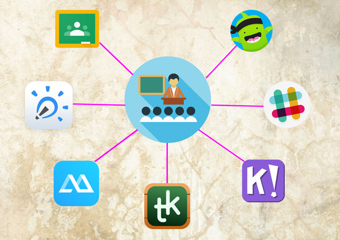

¿Qué es el Software Educativo?

El software educativo es una herramienta tecnológica diseñada para facilitar y enriquecer los procesos de enseñanza y aprendizaje. Está orientado a apoyar a estudiantes y profesores mediante actividades interactivas, contenidos multimedia, evaluaciones, y recursos didácticos que potencian la comprensión de conceptos. Este tipo de software abarca una amplia gama de aplicaciones, como tutoriales, simuladores, juegos educativos y plataformas de aprendizaje en línea, adaptándose a diversos niveles educativos y disciplinas. Su propósito principal es mejorar la calidad de la educación al hacerla más accesible, dinámica e individualizada, permitiendo a los usuarios aprender a su propio ritmo y según sus necesidades específicas.